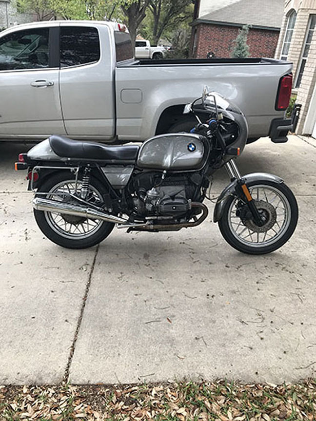

The 80's would be a time of change and growth for BMW® motorcycles as they would do away with the R75 model altogether in favor of the R80 and R100 line. The carberator for the R80 would remain a set of 32mm Bing CV carberators, while the R100 would continue to rely on the 40mm Bing CVs. They would also experiment with a lighter, more sporty clutch assembly, and a more robust gear set-up on their 5 speed manual transmission.